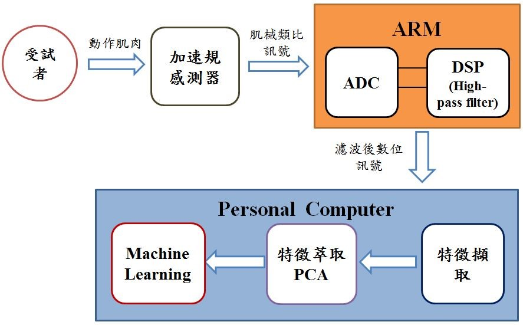
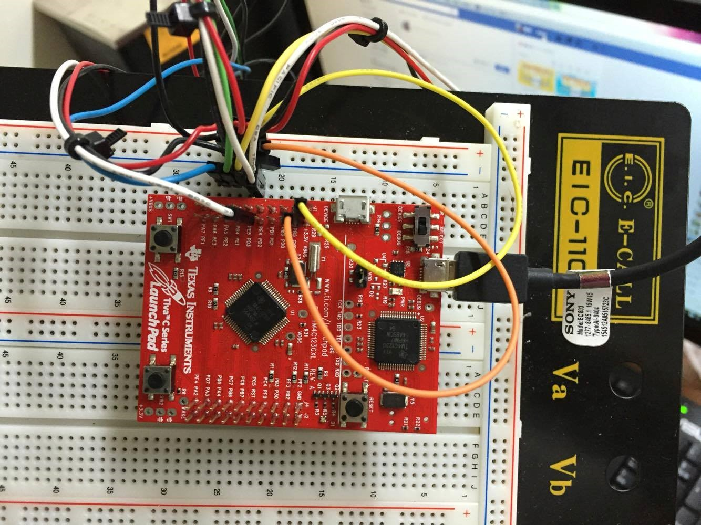
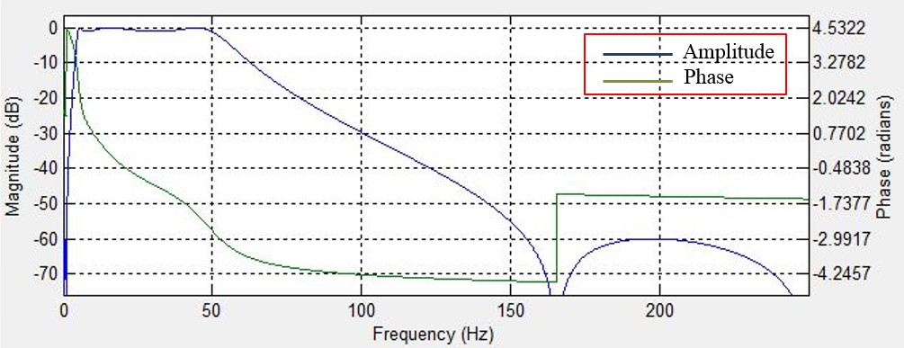
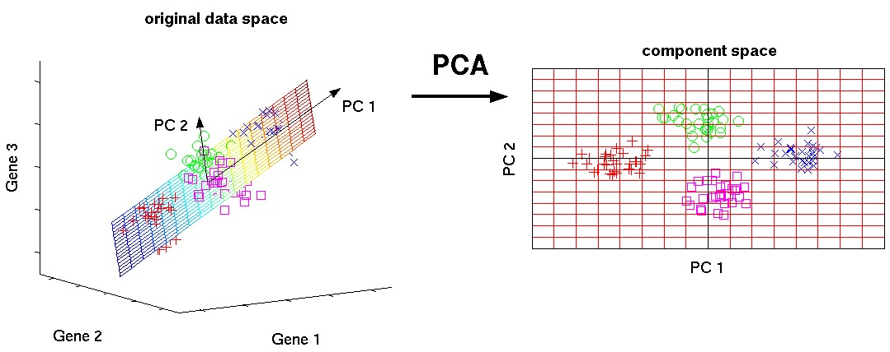
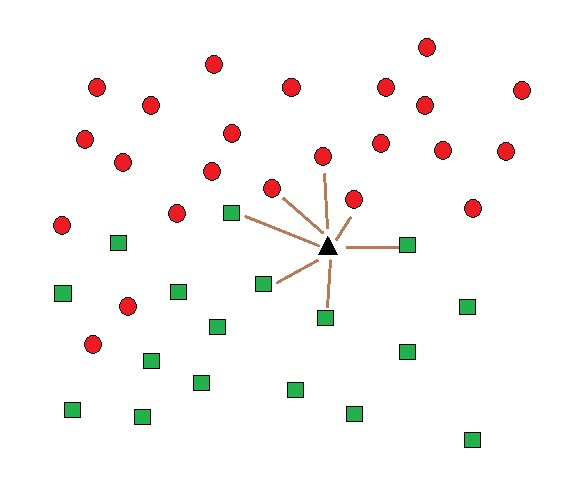

感測電路與信號分析系統應用於肌械訊號
Integrated sensing and signal-analysis system for MMG measurement
背景
肌肉在收縮時所產生的肌纖維震動和大小變化，被儀器所量測到的訊號圖形，簡稱為Mechanomyography (MMG)，一般稱為肌械圖，近年來市面上最常被使用的感測器有三種，分別為:加速規、麥克風、壓電器，能夠量測到肌肉收縮時肌纖維產生的震動信號。 目前已普及化被使用在醫療用途上的肌肉活動感測技術，為利用神經電訊號的控制來顯示出肌肉收縮情況的肌電圖(EMG, Electromyography)。而MMG和EMG相比，MMG可以直觀的去觀察到肌肉的機械性質變化，而EMG則需要經過多種的肌電訊號分析才能得到其特性，例如:MMG的加速規在肌肉纖維振動時能記錄三軸的加速度值變化(X,Y, Z軸)，能在時域分析上有效看出肌肉力量大小的變化；MMG相較之下不容易受到皮膚表面阻抗的影響，例如:在長時間配戴裝置下，受試者會有出汗的情況，肌電圖(EMG)就會因為汗水改變皮膚的阻抗，而導致量測錯誤率的提升，並且肌械圖(MMG)也比較不會受到雜訊的干擾。 MMG在近十年來的逐漸發展下，例如帕金森氏症的肌肉顫動量測、手部姿勢的判別、神經肌肉受損的肌械訊號分析…等，著眼於MMG在未來的醫療輔助上，我們致力於法展出一套健全的MMG系統，從前端的量測訊號處理到終端的機器學習開發，使其在未來能夠運用於醫生診斷，提升現有的醫療品質。
目的
本研究的目的是利用加速規擷取受試者因肌肉收縮，或是由肌肉的刺激而產生肌械訊號，在經過一連串的數據訊號的處理後，進一步得知受試者的生理運動狀態，之後醫生可以藉此評估患者當前的病況。
方法
本系統設計大致上分為三大部分: (1)訊號的擷取、(2)訊號處理、(3)數據處理分析系統(Fig.1)。在前端訊號擷取的部分，選擇加速規因其質量輕體積小，並可以直接記錄因肌肉表面上震動所產生的微小位移和加速度，將其訊號振幅大小轉換成數字訊號，以顯示使用者目前的肌肉狀態。

Fig.1:系統流程圖
而在數據處理的部分包含了濾波器的設計、特徵選取和特徵萃取((註1)主成分分析&Fig.4)，藉由將訊號送入由TEXAS Instruments開發的ARM控制板 (型號-TM4C123G，Fig.2)，在Energia平台上進行開發。而在控制板之中，一般肌肉訊號分布於5Hz到50Hz，因此為了要量取特定頻域的資訊，故需先將訊號由類比轉成數位，並設計一個速度快的低階的濾波器，濾掉高頻訊號和抑制低頻產生的雜訊(Fig.3)。

Fig.2:ARM- TM4C123G

Fig.3:濾波器模擬
再者為了提高最後在機器學習((註2) Machine Learning&Fig.5)中的辨識率，必須經過特徵的挑選和萃取，根據特徵變異數的大小，保留信號中最重要的資訊，同時丟棄不需要也不相關的資訊，以達到維度簡化的作用，並讓之後分析的時間減少、效率提高。最後，使用機器學習的方式讓資料進行學習和訓練，在學習完成後再將新的數據加入去做分類，可以得到受試者的即時生理狀態。
註1:主成分分析(Principle Component Analysis)
在數據處理中我們採用主成分分析(PCA)去做特徵萃取，原理為透過統計的方式對數據進行分析、簡化的技術，將高維度的數據經過線性組合變成幾個互相獨立的特徵，藉由找出資料彼此的變異數，數據中變異數越大代表包含的資訊量越多，保留著數據中最重要的部分，也就是我們所需要的資訊。

Fig.4:主成分分析(PCA)
註2: Machine Learning(機器學習-KNN)
KNN通稱為K-最鄰近分類法，是眾多的分類器中被使用的前十名[3]，也屬於最簡單易懂，並且在使用上非常實用的一種分類方法，應用上也相當廣泛，從視覺到幾何圖形的計算辨識都能使用，原理是採用直觀的方式決定新加入的資料是屬於哪一種分類。首先，把一群資料分別標上不同類別當作已知的訓練參數，再將新的資料放入訓練好的特徵空間中進行比較，在以新的資料去和特徵空間中的每一個資料一一計算距離，而KNN的K值就是找距離與新加入的資料最近的K個訓練資料，從在這K值中佔最多比例的分類標籤就是這筆新加入資料的分類。

Fig.5:KNN示意圖(K=7,新分類為綠色矩形)
參考文獻
[1] I. T. Jolliffe, "Principal component analysis," New York: Springer-Verlag, vol. 487, 1986. [2] http://www.nlpca.org/pca_principal_component_analysis.html [3] X. Wu, V. Kumar, J. R. Quinlan, J. Ghosh, Q. Yang, H. Motoda, et al., "Top 10 algorithms in data mining," Knowledge and information systems, vol. 14, pp. 1-37, 2008.